Home / MLF / Week 3 / Real questions
MLF week 3 - real exam questions
36 questions pulled from past papers whose wording matches this week's topics, newest first, duplicates removed. Pick your answers, then press Check answers. Figures and answer keys are the originals.
Elapsed 00:00
Comprehension passage for this question
Suppose  is a real
is a real  matrix with singular values
matrix with singular values  Based on the above data, answer the given subquestions.
Based on the above data, answer the given subquestions.Inscript What is the rank of
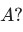
Comprehension passage for this question
Based on the above data, answer the given subquestions.

Which of the following statements is/are correct?
- The rank of is
 .
. - The nullity of is
 .
. - The determinant of is .
- The matrix is invertible.
A company manufactures a special rectangular metal sheet. The production cost (in hundreds of rupees) depends on its length  meters and width
meters and width  meters according to
meters according to  . At a particular stage, the dimensions of the sheet are
. At a particular stage, the dimensions of the sheet are  . The company plans to change the dimensions in the direction represented by the vector
. The company plans to change the dimensions in the direction represented by the vector
 and wants to determine how rapidly the production cost changes in that specific direction. Find the directional derivative of
and wants to determine how rapidly the production cost changes in that specific direction. Find the directional derivative of  at the point in the direction of
at the point in the direction of  .
.
meters and width meters according to . At a particular stage, the dimensions of the sheet are . The company plans to change the dimensions in the direction represented by the vector
and wants to determine how rapidly the production cost changes in that specific direction. Find the directional derivative of at the point in the direction of .


Find the projection matrix that projects the
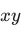
plane onto the line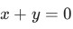
.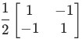
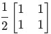
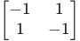
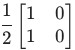
Let  be a real symmetric matrix. Consider the following statements. (1) is orthogonally diagonalizable. (2) is not diagonalizable. (3) All the eigenvalues of are real. (4) The eigenvalues of may be imaginary. (5) Eigenvectors corresponding to distinct eigenvalues of are linearly independent. (6) Eigenvectors corresponding to distinct eigenvalues of are linearly dependent. Which of the above statements are true?
be a real symmetric matrix. Consider the following statements. (1) is orthogonally diagonalizable. (2) is not diagonalizable. (3) All the eigenvalues of are real. (4) The eigenvalues of may be imaginary. (5) Eigenvectors corresponding to distinct eigenvalues of are linearly independent. (6) Eigenvectors corresponding to distinct eigenvalues of are linearly dependent. Which of the above statements are true?
be a real symmetric matrix. Consider the following statements. (1) is orthogonally diagonalizable. (2) is not diagonalizable. (3) All the eigenvalues of are real. (4) The eigenvalues of may be imaginary. (5) Eigenvectors corresponding to distinct eigenvalues of are linearly independent. (6) Eigenvectors corresponding to distinct eigenvalues of are linearly dependent. Which of the above statements are true?- (1), (3), (5)
- (2), (4), (6)
- (2), (3), (5)
- (1), (4), (6)
Let and  . The rows of are represented by row vectors is
. The rows of are represented by row vectors is
and 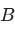
be two square matrices of order . The rows of are represented by row vectors 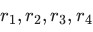
, from top to bottom, and the columns of are represented by column vectors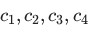
, from left to right. The second row of is 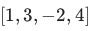
. Which of the following is/are true?- The second row of
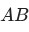
is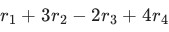
. - The second column of is
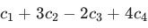
. - The row space of is contained in the row space of .
- The row space of is contained in the row space of .
 is a square matrix of order
is a square matrix of order  with the eigenvalue
with the eigenvalue  repeated twice. Which of the following is/are true?
repeated twice. Which of the following is/are true?- is invertible.
- Each of the entries on the main diagonal of is equal to .
- has two linearly independent eigenvectors.
 is not invertible, where
is not invertible, where  is the identity matrix.
is the identity matrix.
Suppose is a  matrix with rank 4. Which of the following is/are true?
matrix with rank 4. Which of the following is/are true?
is a matrix with rank 4. Which of the following is/are true?- Columns of are linearly independent.
- Null space of contains only the zero vector.
- Row space of is
 .
. - Left null space of has dimension 2.
Consider the following dataset with two features and three observations:
 Let
Let  be the least squares solution that minimizes
be the least squares solution that minimizes
 Select the correct option(s):
Select the correct option(s):
Let be the least squares solution that minimizes
Select the correct option(s):

- The minimum value of the loss function is zero.
- The minimum value of the loss function is strictly positive.
Inscript  is a real matrix of shape .
is a real matrix of shape .
is a real matrix of shape 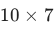
with the following singular values: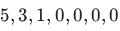
. Find the rank of .Which of the following is a basis for the column space of the matrix given below?

given below?


Which of the following is/are true?
- If and
 are matrices of the same size, then
are matrices of the same size, then  .
. - The rank of a matrix is equal to the number of non-zero rows in it.
- If is a matrix which is obtained by permuting the rows of the
 identity matrix, then the rank of is
identity matrix, then the rank of is  .
. - If
 is a non-zero column vector in
is a non-zero column vector in  , then the rank of the matrix
, then the rank of the matrix  is
is  .
.
If  is a square invertible matrix, which of the following is/are true?
is a square invertible matrix, which of the following is/are true?
is a square invertible matrix, which of the following is/are true?- The row space of is equal to its column space.
- The nullspace of is equal to its left nullspace.
- The left nullspace of is equal to its row space.
- The nullspace of is equal to its row space.
A bank wants to decide whether a loan applicant should be given a loan or not, based on features like income, credit score and past records. Which of the following machine learning techniques is applicable for this scenario?
- Regression
- Classification
- Clustering
- Dimensionality Reduction
Comprehension passage for this question
Based on the above data, answer the given subquestions.

Which of the following sets forms a basis for the row space of A?
- {(1, 0, 2), (0, 1,−1)}
- {(1, 0, 2), (0, 1,−1), (0, 0,−1)}
- {(1, 0, 2), (0,−1, 1), (0,−1,−4)}
- {(0, 1,−1), (0, 0,−4)}
Which of the following options is/are true regarding the projection matrix?
- It is a symmetric matrix.
- It is an orthogonal matrix.
- It is orthogonally diagonalizable.
- It is always a rank 1 matrix.
In the context of Principal Component Analysis (PCA), which of the following statements is/are correct?
- PCA projects the original data onto a lower-dimensional subspace thatcaptures the maximum variance.
- The eigenvectors of the covariance matrix correspond to the directions ofmaximum variance.
- The principal components form a basis that is not necessarily orthogonal.
- The principal components obtained through PCA are always uncorrelated.
In the context of Linear Algebra, which of the following statements about Principal Component Analysis (PCA) is/are true?
- The principal components of a matrix are given by the eigenvectors of itscovariance matrix.
- The principal components of a matrix are given by the singular values of itscovariance matrix.
- PCA finds the principal components by maximizing the variance along eachcomponent.
- The principal components form a basis that is not necessarily orthogonal.

- Eigenvectors corresponding to the two different eigenvalues of M areorthogonal.
- The matrix M is not diagonalizable.
- The eigenvalues of M are 4 and 1
- The rank of M is 1.
Which of the following 3 × 3 matrices have rank 2 with column space equal to row space?


Which of the following is/are true about PCA?
- PCA will transform the original data set onto a lower dimension subspace suchthat the variance of the project is maximized.
- PCA calculates the mean of each data set to determine its significance.
- PCA can be used to reduce the dimensionality of the dataset.
- PCA will transform the original data set onto a lower dimension subspace suchthat the reconstruction error is maximized.
What is the primary goal of Principal Component Analysis (PCA)?
- To find the directions that capture the maximum variance in the data.
- To find directions that capture the minimum variance in the data.
- To increase the dimensionality of the data.
- To reduce the number of data points.
Comprehension passage for this question
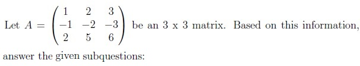
Find the row space of matrix A.
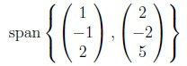
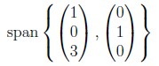
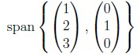
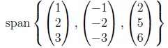
Comprehension passage for this question
Find the column space of matrix A.
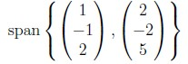
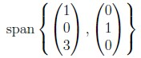
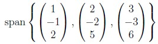
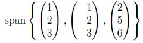
Find the best fit line for the dataset given below using least squares method.
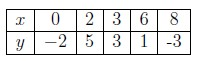
Find the best fit line for the dataset given below using least squares method.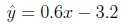
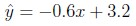
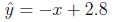
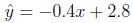
Which of the following is/are supervised learning task(s)?
- Predicting future sales of a product based on the past sales data.
- Reducing the dimensionality of images while retaining essential features,enabling efficient storage and transmission.
- Recognizing and interpreting handwritten characters or words, often used indigit recognition or reading handwritten text.
- Categorizing text documents into predefined classes, such as spam or non-spam emails.
Comprehension passage for this question

What is the rank of A?
Comprehension passage for this question
Based on the above data, answer the given subquestions.

Find the projection of b onto U.


Comprehension passage for this question
Based on the above data, answer the given subquestions.
Find the length of the error vector e =b − p, where p is the projection of b onto U. Enter the answer correct to two decimal places.
Which of the following statements is/are true for a real symmetric matrix A?
- AT A and AAT have the same rank.
- AT A and AAT have the same eigenvalues
- AT A and AAT have the same eigenvectors.
- AT A and AAT have the same singular values.
Which of the following statements is/are true?
- Row space of a matrix is orthogonal to the null space of the matrix.
- Row space of a matrix is orthogonal to the null space of transpose of thematrix.
- Dimension of row space of a matrix is always equal to the dimension ofcolumn space of the matrix.
- Dimension of row space of a matrix need not be equal to the dimension ofcolumn space of the matrix.
Let P1 be the projection matrix onto the line spanned by the vector a = [1, 2, 3]T . Let P2 be the projection matrix that projects vectors onto the plane perpendicular to span of a. Find the determinant of P1 + P2.
Comprehension passage for this question
Based on the above data, answer the given subquestions.

Using the least square approximation, find the length of the projection vector p of b onto the column space of A. Enter the answer correct to two decimal places.
If A is a 10 × 8 real matrix with rank 8, then which among the following is true?
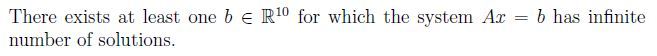
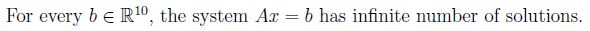
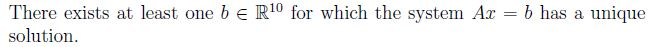
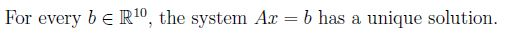
Which of the following statements is/are false?
- A 3 × 3 matrix can have same column space and null space.
- A 6 × 6 matrix can have same column space and null space.
- Dimension of column space is always equal to the dimension of row space
- Column space and row space of a matrix are the same.
What are the properties of principal components in PCA?
- All principal components are orthogonal to each other.
- The number of principal components for n-dimensional data are atmost n−1.
- The first principal component accounts for most of the possible variability ofthe original data i.e, maximum possible variance.
- The first principal component is the eigenvector of the covariance matrixcorresponding to the maximum eigenvalue.